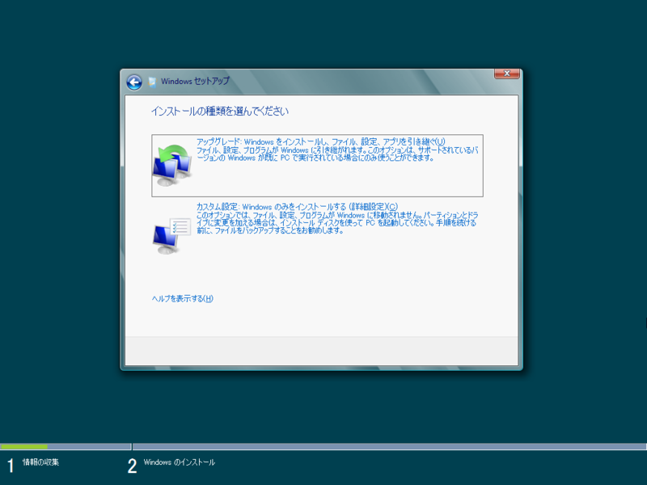
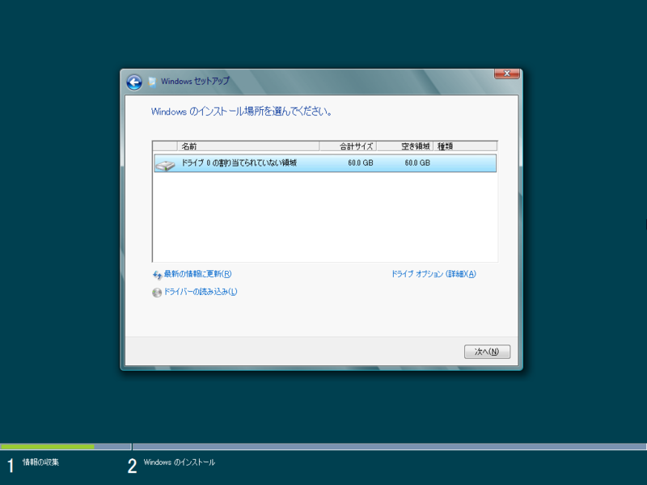
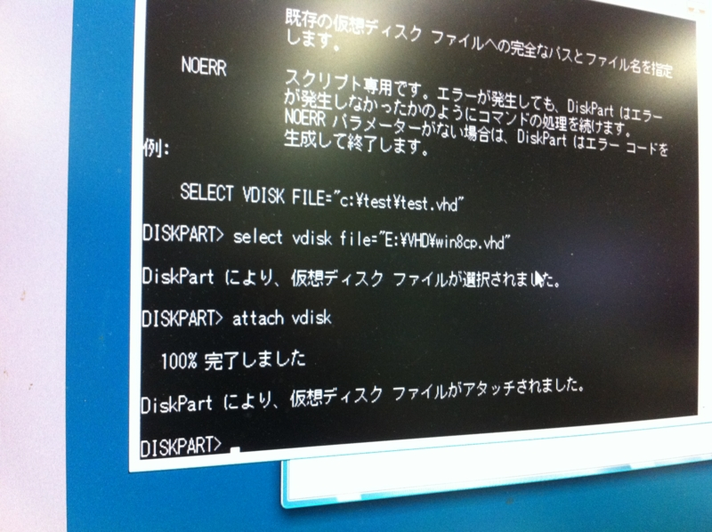
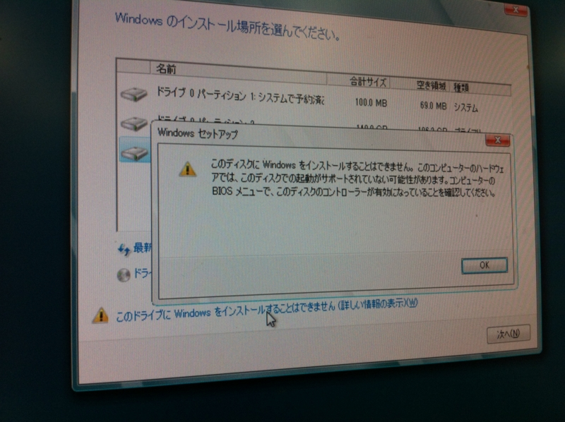
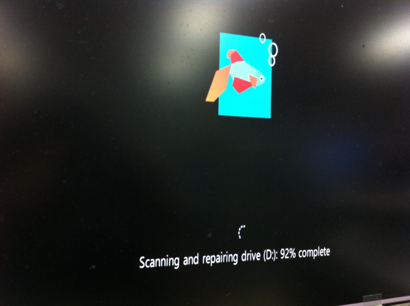
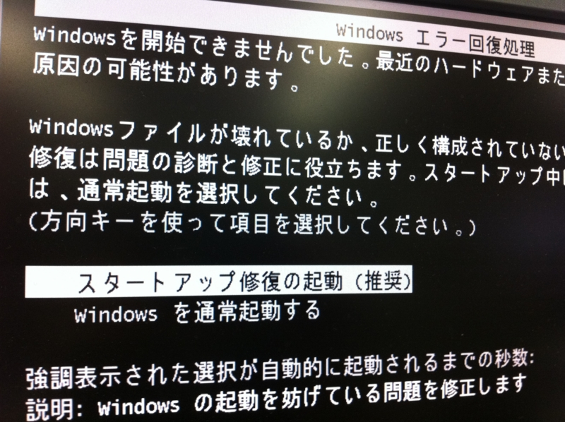
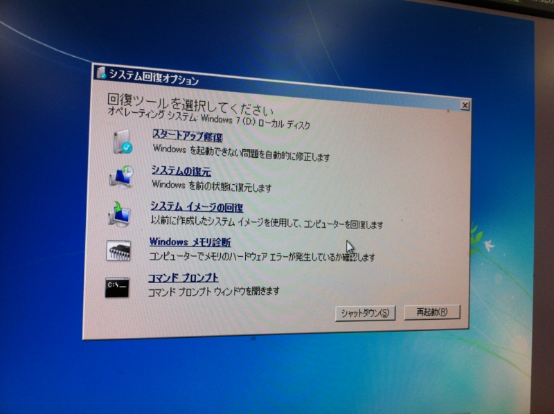

VHD に Windows 8 Consumer Preview をインストールしてデュアルブートしてみる
公開日：
ウチの環境はパーティションを切らずに Windows 7 をインストールしている。これに Windows 8 CP をインストールしたいのだけど、パーティションを縮めたり切ったりするのはちょっと怖い。なので、今回は VHD へ Windows 8 CP をインストールしてデュアルブートにしてみた。
VHD の作成
VHD ファイルの作成 - だるろぐ をみて VHD ファイルを作る。今回は C:\VHD\Win8cp.vhd というファイルを作ってみた。
インストールメディアの作成
Windows 8 CP のインストール

カスタム設定を選択。

インストールするパーティションを選択する画面で、［Shift］＋［F10］キーを押す。するとコマンドプロンプトが起動するので、ここで VHD を接続（Attach）する。

DISKPART DISKPART>SELECT VDISK FILE="E:\VHD\Win8cp.vhd" DISKPART>ATTACH VDISK DISKPART>EXIT EXIT
ドライブレターがズレてしまうので、あらかじめ VHD ファイルのパスを再確認しておこう。ウチの場合は、Eドライブにあった。
VHD を接続して［最新の状態に更新］すると、接続したVHDがパーティションの一覧に現れる。あとはそれを選択してインストール作業を進めればよい。

できたよー ＼(^o^)／
トラブルシューティング
このディスクには Windows をインストールできません、と言われる

実際にはインストールが可能。
スキャンディスクが……

見てみないふりする。
スタートアップの修復が必要だと言われる

まず落ち着く。

PC叩いて再起動でもすりゃ直る。